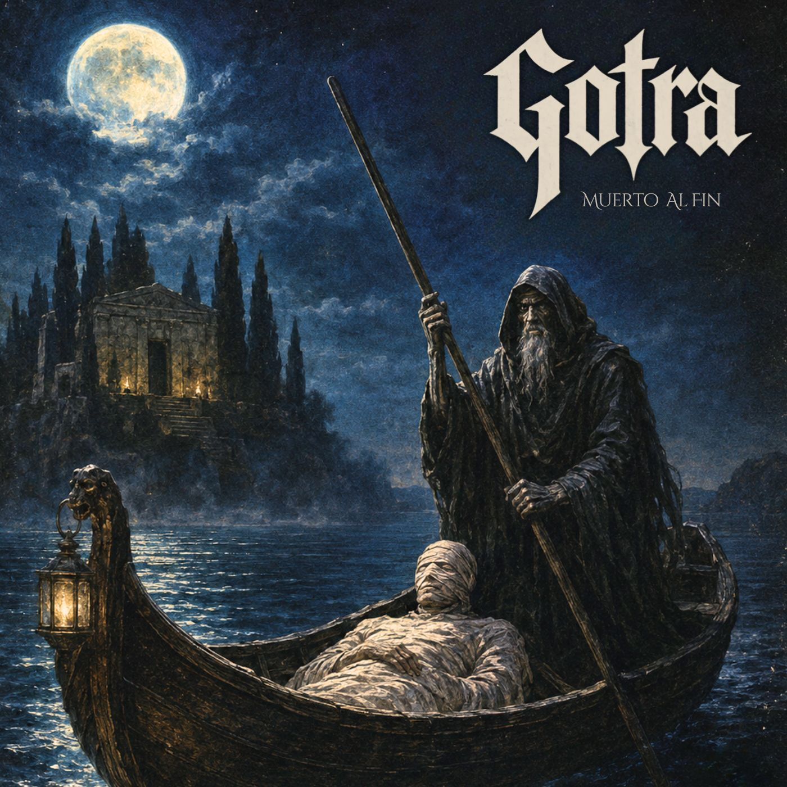
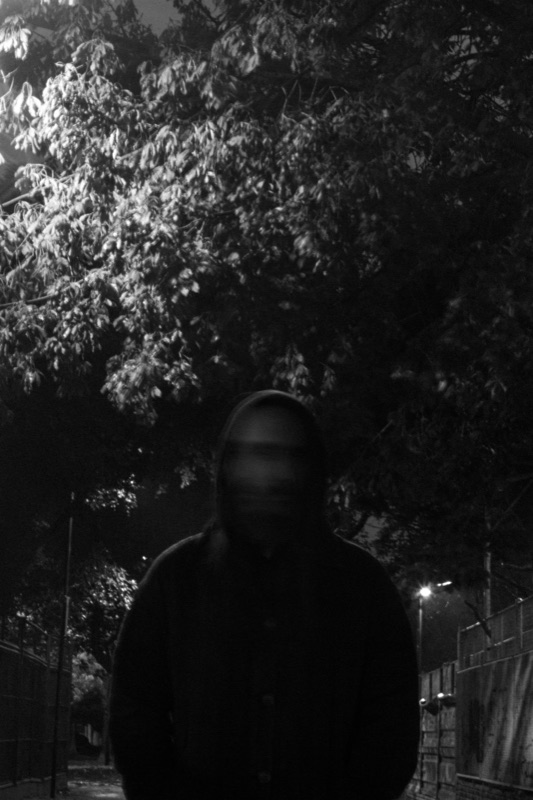
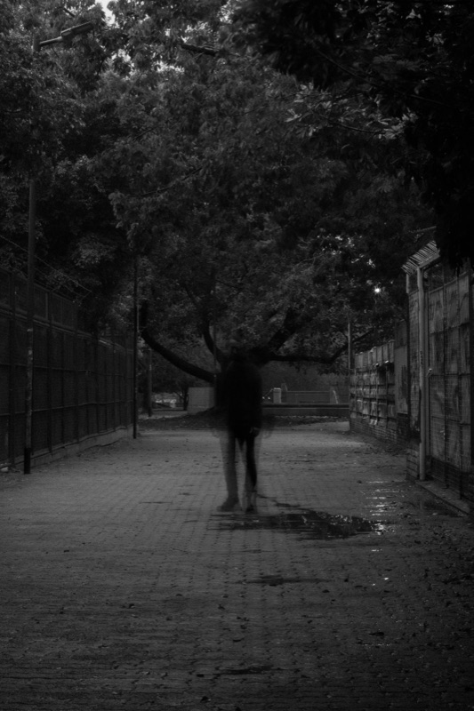
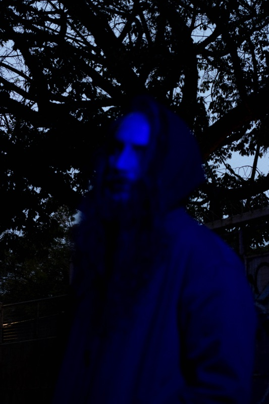
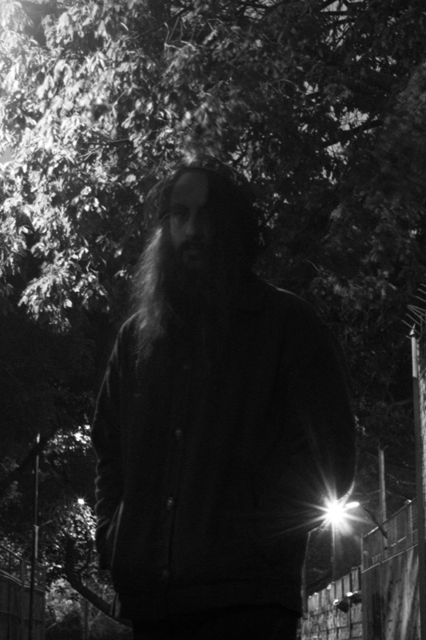

Muerto Al Fin
Single Debut | Ya Disponible
La primera gema sónica de GOTRA. Un riff espeso afinado en C# asentado sobre bases pesadas, en colaboración con Javier Rubio (Malón) en baterías y Juan Sebastián Rey en arreglos de teclado.
Seguir en Instagram
El Bardo & La Barca
Bardo Thodol & Böcklin
«Muerto al Fin» es, ante todo, un pasaje sónico para dejarse llevar. La música conduce un tránsito inspirado en las lecturas del Libro Tibetano de los Muertos y la pintura La Isla de los Muertos de Arnold Böcklin. A través de la imagen de un cuerpo transportado en una barca, la canción explora la disolución del yo y la impermanencia de todo lo que nos rodea.
"Creo que al final, lo que más me inspiró es la idea de la reencarnación como una reflexión sobre el presente personal y la impermanencia: el hecho de que mañana puede acabarse todo tranquilamente y que el olvido no está mucho más lejos de ahí."— Jules
Prensa
Reseñas & Cobertura de Medios
Metal Argentum
«Julián Barabino oficializó GOTRA, su nueva propuesta que fusiona la densidad del doom, el rock psicodélico de los setenta y una fuerte impronta esotérica.»
Leer Artículo
ReseñaDelta 80
«Gotra: doom, psicodelia y esoterismo para atravesar la muerte y volver a despertar. Un nuevo proyecto que cruza la densidad del doom con la psicodelia de los años 70.»
Leer Artículo
NoticiasDarkness News
«Gotra presenta el single debut «Muerto al Fin» en colaboración con Javier Rubio (Malón).»
Leer Artículo
NoticiasRevista Buff
«GOTRA debuta con "Muerto Al Fin", la nueva apuesta pesada de Julián Barabino.»
Leer Artículo{kind=link}
Contacto
Contacto & Prensa
Para ponerte en contacto, completá el siguiente formulario. También podés hacerlo directamente a través de los canales de comunicación abajo: